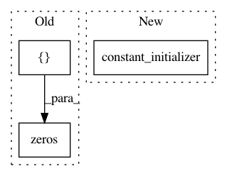

d42df89c351e0c2a031ea3a9ae17fb7b844e7b79,tensorlayer/layers.py,BatchNormLayer,__init__,#BatchNormLayer#Any#Any#Any#Any#Any#Any#Any#Any#,1680
Before Change
if is_train:
is_train = tf.cast(tf.ones([]), tf.bool)
else:
is_train = tf.cast(tf.zeros([]), tf.bool)
mean, variance = control_flow_ops.cond(
// is_train, lambda: (mean, variance), // when training, (x-mean(x))/var(x)
After Change
trainable=False,)// restore=restore)
moving_variance = tf.get_variable("moving_variance",
params_shape,
initializer=tf.constant_initializer(1.),
trainable=False,)// restore=restore)
//// 3.
In pattern: SUPERPATTERN
Frequency: 3
Non-data size: 3
Instances
Project Name: zsdonghao/text-to-image
Commit Name: d42df89c351e0c2a031ea3a9ae17fb7b844e7b79
Time: 2017-01-18
Author: dhsig552@163.com
File Name: tensorlayer/layers.py
Class Name: BatchNormLayer
Method Name: __init__
Project Name: UFAL-DSG/tgen
Commit Name: 01f5ddbfd61060791276fd94e150c77127f3ae20
Time: 2016-04-05
Author: odusek@ufal.mff.cuni.cz
File Name: tgen/tfclassif.py
Class Name: RerankingClassifier
Method Name: _rnn
Project Name: UFAL-DSG/tgen
Commit Name: 01f5ddbfd61060791276fd94e150c77127f3ae20
Time: 2016-04-05
Author: odusek@ufal.mff.cuni.cz
File Name: tgen/tfclassif.py
Class Name: RerankingClassifier
Method Name: _ff_layers